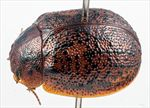
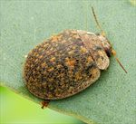
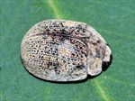
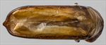
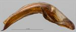
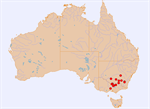

Click on images to enlarge
{kind=link}

Female, Narrandera, New South Wales
{kind=link}

Male, Forbes, New South Wales
{kind=link}

Female, Narrandera, New South Wales
{kind=link}

Aedeagus, dorsal view (Wagga Wagga, New South Wales)
{kind=link}

Aedeagus, lateral view (Wagga Wagga, New South Wales)
{kind=link}

Distribution
Name
Trachymela sloanei (Blackburn)
Reference specimen
2001-089a, Narrandera, Southern NSW
Adult Description
Length: ♂ (6.9)7.3–8.4 mm (n=17), ♀ 7.8–8.9 mm (n=21).
Colouration:
- Head: uniformly mid-brown with black-tipped mandibles, a black area sometimes extends forward a small distance from centre rear; labrum usually paler; antennomeres 1–6 light to mid-brown, 7–11 similar or more commonly slightly darker.
- Pronotum: brown, concolorous with head, almost always with two dark brown to black, roughly longitudinal, irregular maculae on each side behind the eye, the outer macula sometimes split into two.
- Scutellum: brown, concolorous with or fractionally lighter than pronotum.
- Elytra: brown, concolorous with pronotum, with many small similar-sized dark brown or black maculae scattered quite evenly over almost the whole surface, less often their distribution is less even and/or the size of the maculae less uniform, in a few specimens some of them align either longitudinally or more rarely, transversely, to form rough bands of dark colour; punctures are fractionally darker than interstices; humeral callus is dark brown or black.
- Venter & Legs: mid- to dark brown tending lighter-coloured towards the sides, with legs usually a fractionally lighter shade; inside surface of elytral epipleura brown.
- Cuticular Wax: moderate layer of grey to grey-brown or orange-brown that rarely conceals the dark verrucae, sometimes two slightly distinct shades are present; in some specimens 3 or 4 faint, interrupted lines of wax may be discernable in the posterior half of the elytra.
Morphology:
- Body shape: rather flattened, greatest height viewed laterally is in posterior half.
- Head: punctures moderately sized (pd ≈ 1.5–2× ef) and quite evenly and densely distributed, sometimes partially obliterated by rugose interstices; antennae short (AL/BL: ♂ 37–39%, ♀ 34–37%), filiform.
- Pronotum: almost evenly curved transversely; foveal depression broad but very shallow with a clearly defined and almost round elevated area in middle; puncturation clearly impressed and quite evenly densely distributed in discal area, becoming coarser from foveal depression to lateral margins; front margins join lateral margins in a smoothly rounded right-angle, with lateral margin curving smoothly and gradually towards rear margin.
- Scutellum: variable, punctures usually similar in size and density to those on adjacent area on pronotum, sometimes more lightly punctured posteriorly, rarely completely unpunctured; surface may be rough, frequently with a faint longitudinal central ridge.
- Elytra: surface evenly curved transversely, lightly curved longitudinally in anterior half, then more strongly curved; punctures large and distinct and relatively evenly distributed, with much smaller punctures scattered sparingly on the interstices; small areas of thickened, elevated, black interstices are scattered fairly evenly over surface; surface continuous under humeral callus; vertical extension of epipleura moderate (HCE/PW = 0.33–0.37).
- Venter: prosternal process almost parallel-sided, lightly closed (rarely open) anteriorly; short setae sparsely distributed over prosternal process, absent from mesoventrite; a single seta on anterior and median trochanter; front edge of metaventrite beveled, truncate; inner edge of posterior of epipleurae lacking setae.
Male Genitalia (Aedeagus):
- Dimensions: moderate-sized (LPE/BL = 30–34%).
- Dorsal view: shaft almost parallel-sided for most of length, sides converge towards apex in a smooth to slightly uneven arc; dorsal surface quite membranous with faint to well-defined dorso-median channel present, short dorsolateral channels present adjacent to ostium; tip protruding and smoothly rounded; ostium short and transverse, posterior surface in the form of a triangle with apex at centre.
- Lateral view: shaft almost evenly curved throughout apical and central section with a more pronounced bend just in front of basal section, thinning towards apex over 15% of length; tip deflexed; flagellum very thin, almost invariably broken off.
Immature Stages
Unknown.
Similar species
- Ta31: This closely related species is distributed in south-east Queensland and northern and central coastal New South Wales. It is superficially very similar to Ta12, including in the structure of the aedeagus. Ta31 is distinguishable by the darker pronotum, the greater proportion of black on the elytra, and the larger anterio-median depression, while ventrally it is mostly dark brown compared to Ta12, which is predominantly lighter brown in colour.
- Ta84: This central Australian species is remarkably similar in the markings on the prothorax and the sculpture of the elytra, though the distribution of verrucae on the elytra is a little less dense. There is little difference in the aedeagus between the two species, that of Ta84 being a little narrower anteriorly compared to that of Ta12 (see Notes).
Notes
- Taxonomy: Identification of this species is from B.J. Selman. Three very similar species described by Blackburn (1896) are Trachymela sloanei (Ta12), Trachymela interioris (Ta84), and Trachymela grossa (Ta31). There are small differences in several characters between these species, but the aedeagus is very similar in all three. From current data, the three species seem to be allopatric, but a more detailed look at museum collections may reveal connections between these populations, particularly since Eucalyptus camaldulensis is found over much of inland Australia and E. tereticornis is present along most of the eastern coastal areas. It is thus quite possible that these are geographic varieties of a single species.
- Distribution & Abundance: Ta12 is distributed in Victoria and southern New South Wales.
- Host Associations: Ta12 occurs on eucalypts of the box group (Eucalyptus, section Adnataria), as well as the river red gum (Eucalyptus camaldulensis). Trachymela interioris (Ta84) is also mostly found on E. camaldulensis, while T. grossa (Ta31) seems to occur mostly on E. tereticornis, a closely related species in the red-gum group.
- Morphological Variation: This seems to be a very variable species. Even specimens from one location (Hay) differ considerably among themselves in size, shape, colouration (from light to dark brown), and density of verrucae.
Copyright © 2026. All rights reserved.